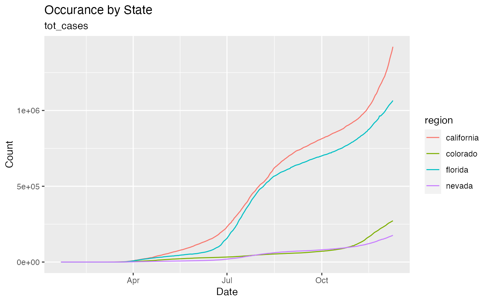

covid_growth.Rdcovid_growth streamlines the process for plotting a line graph to analyze longitudinal changes in a user-selected variable over time. Variable options include total cases ("tot_cases"), new cases ("new_cases"), total deaths ("tot_death"), and new deaths ("new_death").
covid_growth( states = c(), value, sum = FALSE, df_print = FALSE, interact = TRUE, ... )
| states | region to analyze. |
|---|---|
| value | covid statistic to analyze. |
| sum | take sum of all cases over states or treat states individually. |
| df_print | print a data frame or not. |
| interact | whether additional information will display when user hovers over image (use ggplot or plotly) |
| ... | pass other arguments |
a plotly or ggplot object.
covid_growth(states="colorado", df_print=FALSE, sum=FALSE)#>#>#> #> #>#>#> #>#> #> #> #>#> #> #>#>#> #>#> #> #>#> #> #>#> #> #>#> #> #>covid_growth(states=c("colorado", "nevada")) covid_growth(states=c("colorado", "nevada", "florida", "california"), df_print=FALSE, sum=FALSE) covid_growth(states=c("colorado", "nevada", "florida", "california"), interact=FALSE)